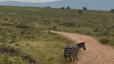
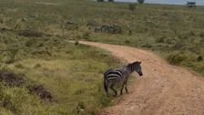
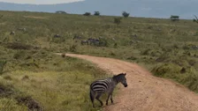
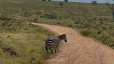
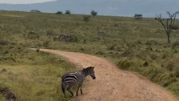
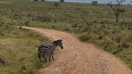
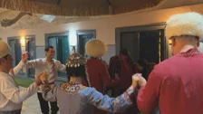
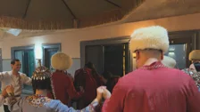

Stop guessing when
to press record.
By the time you reach for the camera, the moment is already half over, so the best ones are the ones you missed. With Trimly you start recording when you arrive and stop when you leave. Keeping only the good parts takes minutes, not an evening.
BeforePress record when something happens
With TrimlyRecord it all, keep the best








Visual: the two tracks play side by side as the section scrolls in. Moments glow on both; on the top one the record dot turns on too late and they fade away, on the bottom one each moment gets its clip band. The scene names below become five small prints with 3-second loops.
Asset: nothing new for the tracks (reuses the hero footage). Optional: five 3–4 s loops, one per scene.
Open. Mark. Keep.
Open it where it lives
Photos, Files, an external drive, or your NAS over SMB and WebDAV. Trimly reads the original in place, without making a copy.
Mark what matters
Drag in and out points, step frame by frame, follow the waveform. Make as many clips as you like, grab a still or a Live Photo, and give each one a label.
Pick up camera marks
Trimly also reads the marks you added by hand while recording on DJI and GoPro.
Keep it in Photos
Each clip goes back to your library at the original quality, ready to share.
Visual: a sticky-scroll sequence. The green playhead from the hero becomes the rail on the left of the page; each step is one clip on it. The step's screen shows the real iPhone UI at that moment.
Asset: three iPhone screen recordings (or stills): import sheet with sources, timeline with clips marked, export sheet.
An hour of footage.
The good parts, found.
On-device intelligence listens and looks through the recording for you: what was said, a laugh, an animal, words on screen, the beat of the music. You pick what to keep.
Visual: interactive. Tapping a chip lights up matching segments on a recorder like the hero's; the transcript chip shows translated subtitles. Small print: runs on Apple's on-device frameworks; nothing is uploaded.
Asset: one 5–15 min recording with speech, a laugh, an animal and on-screen text, plus Find Clips screenshots for each search.
It lands on the day it happened.
Most editors save a clip as if it were shot today. Trimly works out the real moment of every frame, so each clip shows up next to the photos from that afternoon, with its place, camera and lens.
Photos grid, the clip sits under Today. Info panel shows no place, no camera.
Same clip sits under Wednesday, Oct 1, 2025 · 14:21, among that day’s photos. Info panel: map pin in the Serengeti, iPhone 17 Pro, Telephoto 100 mm ƒ2.8.
- Choose the time zone for travel footage
Visual: the hero's prints drop into a Photos-style day grid. A toggle switches between "typical export" and "Trimly". This is the section to spend the most effort on.
Asset: one clip's real Photos grid (the day it was shot, 8–12 neighbouring photos) and its Info panel, on iPhone or Mac. Plus the same view for a "typical" export for comparison.
Leave Log on.
Your library still looks right.
Log keeps the most from every scene, but it comes out of the camera grey and flat. Grading it used to be an evening’s work, so many people simply stopped shooting Log. With Trimly you pick a LUT once and the graded look is saved straight back to the video in Photos. Scroll your library and it already looks like the day you had.
- The original Log is kept; remove the look any time
- Select a batch on the home screen and grade them together
- Clips you export have the look baked in
- Built-in LUTs for Apple Log 2 and other popular camera brands
Visual: as the section scrolls in, flat Log thumbnails in a Photos grid turn graded one by one (working sketch above, with a simulated Log look). Then a before/after slider with a tab per camera.
Asset: (1) a real Photos grid before and after a batch apply, on iPhone and Mac; (2) a Log frame and its graded version for each camera brand, 2400 px wide; (3) a screen recording: Home → select videos → Apply LUT → open Photos.
Start on iPhone. Finish on Mac.
Watch it on TV.
Mark clips on the way home, pick them up at your desk, then play the highlights for everyone in the living room. iCloud carries your edits, never your footage.
- Handoff and a Continue Editing widget
- Shortcuts actions for trimming and exporting
Visual: the same project on four screens in a row, with a progress line passing through them like a clip moving along a timeline.
Asset: matching screenshots of the same project on each device (the App Store set nearly covers this; the Apple TV editor shot needs real footage instead of a slide).